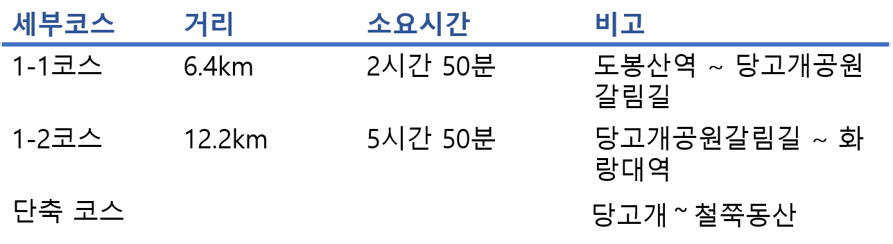
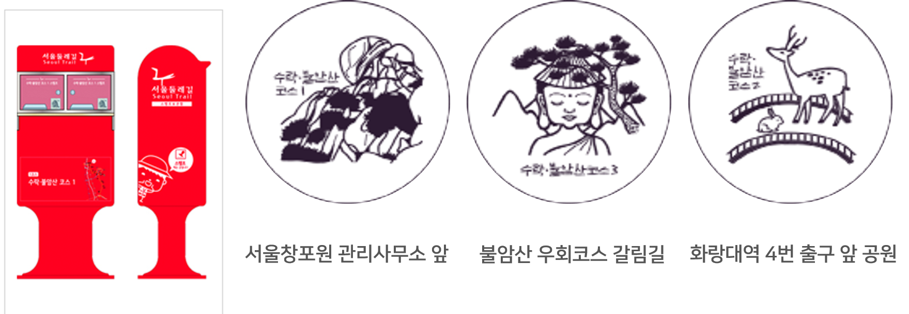

1코스-수락·불암산코스
1코스-수락·불암산코스 노원구,도봉구 18.6km 8시간 40분 고급
세부코스정보
서울 둘레길의 1코스로서 수락산과 불암산을 통과하는 노선이다. 서울의 대표적인 수락산과 불암산을 트래킹하며 숙련된 트래킹기술을 요하지는 않도록 정상을 통과하는 것이 아닌 불암산을 둘러 통과하는 노선으로 대체적으로 완만하다. 이 코스는 수락산과 함께 연계되어 태릉까지 이어지며 노선주변으로 수락산역, 당고개역, 상계역, 화랑대역 등이 인접한다.

교통편
출발지 : 지하철 1호선, 7호선 도봉산역 2번 출입구
진입로 1 : 지하철 7호선 수락산역 3번 출입구
진입로 2 : 지하철 4호선 당고개역 3번 출입구
도착지 : 지하철 6호선 화랑대역 4번 출입구
세부코스
도봉산역~서울창포원~덕릉고개~넓은마당~경수사~성관사~넓적바위~학도암~태릉~화랑대역
관광포인트
- 총면적 52,417㎡에 꽃창포를 비롯한 다양한 꽃을 볼 수 있는 생태공원 '서울창포원'
- 조선 제11대 왕 중종의 두 번째 계비인 문정왕후 윤씨의 무덤인 '태릉'
- 푸른 바위와 안개가 자욱한 계곡이란 뜻의 수락곡계곡 '벽운동계곡'
- 신라 진평왕 43년(621년)에 원광국사가 삼국통일의 염원을 담아 창건한 '수암사'
- 1872년 명성황후의 염원에 의해 조성된 높이 22.7m, 폭 7m의 '마애관음보살좌상'(서울시유형문화재 제 124호)
여행자 정보
- 지하철 1호선, 7호선 도봉산역에서 시점으로 이동 가능함
- 화장실이 많지 않아 지하철에서 미리 다녀올 것을 추천함
- 귀임봉에서 하산하여 당고개역을 통과하는 단축코스를 이용할 수 있음(5km/1시간30분 단축)
- 서울둘레길안내센터에서 완주증을 받을 수 있음
* 도보인증안내 : http://gil.seoul.go.kr/walk/main.jsp
스탬프 정보

주요 지점 및 추천 장소

태릉과 강릉은 서울 노원구 화랑로에 위치한 조선시대 왕릉으로
태릉과 강릉 중간 지역엔 대한체육회에서 운영하는 태릉선수촌이 있다. 문정왕후의 능인 태릉과 명종과 인순왕후의 능인 강릉의 합장으로 서울 노원구 공릉동에 위치해 있다.
이용시간 : 06:00~18:00 (매표 시간06:00~17:00)
휴무일 : 월요일
태릉과 강릉
붓꽃이 가득한 특수 식물원이자 생태공원
서울 강북의 끝자락인 도봉산과 수락산 사이에 세계 4대 꽃 중 하나로 꼽히는 붓꽃(Iris)이 가득한 특수식물원이 들어섰다. 서울창포원은 붓꽃원, 약용식물원, 습지원 등 12개의 테마로 구분 조성됐다.
이중 붓꽃원에는 130종의 다양한 붓꽃 30만본을 종류별로 붓꽃의 아름다움을 감상할 수 있게 만들었다.
운영 요일 : 월~일
입장료 : 무료